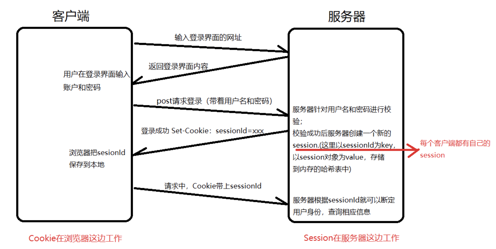

cookie和session
cookie
1 | http是无状态的，我们在访问一个网站的时候希望前后具有关联性，比如说我登录网站，后面的请求我也希望是登录状态。所以产生了cookie。 |
session
1 | session中文翻译是“会话”，session是在服务器的一种机制，因为cookie是客户端保存的数据，而这些数据又是跟用户强烈相关联的，显然保存在客户端这边就不太合适（太多，也占资源），所以把数据都保存在服务器这边就比较的合适；保存的方式就是通过session的方式来进行保存的。 |
cookie和session工作流程

Cookie和session的区别
作用的对象不同
1 | Cookie是客户端机制，Session是服务器机制。 |
安全性不同
1 | cookie存储在客户端，所以可以分析存放在本地的cookie并进行cookie欺骗，安全性较低。 |
存储的位置不同
1 | cookie的数据信息存放在本地硬盘。 |
存储容量不同
1 | cookie存储的容量较小，一般<=4KB。 |
存储时间不同
1 | cookie可以长期存储，只要不超过设置的过期时间，可以一直存储。 |
存储的数据类型不同
1 | Cookie 只能保管ASCII字符串。 |
使用习惯上
1 | Cookie和Session经常一起配合使用，但不是必须配合使用。 |
存储习惯上
1 | Cookie 主要用来存储上一次访问浏览器时间、访问次数、用户身份标识。 |
本博客所有文章除特别声明外，均采用 CC BY-NC-SA 4.0 许可协议。转载请注明来自 East'blog！